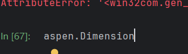

Aspen+Plus+Python+自动化深度解析：物性配置与+COM+接口机制勘误
📝 致谢：本文核心思路源自群友 WnWolf 的指路与探讨。
🤝交流群:562721026
一. 前言：打破 VB 文档的“魔咒”
Aspen Plus 官方提供的 Automation Help 文档主要是基于 VB (Visual Basic) 编写的。对于 Python 开发者来说，直接照搬文档往往会遇到“水土不服”的问题。
由于文档更新滞后，许多方法在 Python 层面已经被淘汰或行为机制不同。
Aspen的help文档给出的代码并不全，原因可能是因为这个Aspen Help文档的基础语言是VB，而我探讨的是Python层面的,所以一些方法和VB可能不太相同，也有可能是一些方法被淘汰了，但是aspen没说，比如aspen.Run()就被淘汰了，换成aspen.Run2(),可是现在网上的一些教程还在用aspen.Run2(),其次,aspen.Close(),只能关闭而不能清后台，最应该使用的是最新的aspen.Quit()
- 探索黑盒的神器：
dir()
由于 Aspen 的底层接口是基于 C++ 开发的 COM 组件，Python 在调用时属于动态绑定 (Late Binding)。这导致了一个让新手极度抓狂的现象：
当你用鼠标左键点击对象，或者试图让 IDE 自动补全时，由于无法进行静态分析，屏幕上什么也不会显示。
此时，Python 内置的 内省函数 (Introspection) dir() 就成了我们在黑暗中探索的“手电筒”。它可以返回当前模块或对象的所有属性与方法列表。
示例 1：查看基础列表属性¶
注：双下划线开头（如 __add__）的是 Python 的魔法方法，此处暂不展开。
dir([ ]) # 查看列表的方法
['__add__', '__class__', '__contains__', '__delattr__', '__delitem__', '__delslice__', '__doc__', '__eq__', '__format__', '__ge__', '__getattribute__', '__getitem__', '__getslice__', '__gt__', '__hash__', '__iadd__', '__imul__', '__init__', '__iter__', '__le__', '__len__', '__lt__', '__mul__', '__ne__', '__new__', '__reduce__', '__reduce_ex__', '__repr__', '__reversed__', '__rmul__', '__setattr__', '__setitem__', '__setslice__', '__sizeof__', '__str__', '__subclasshook__', 'append', 'count', 'extend', 'index', 'insert', 'pop', 'remove', 'reverse', 'sort']
示例 2：透视 Aspen 对象 (HappLS)¶
让我们以 HappLS 对象为例进行实测（关于 HappLS 的详细定义可参考）：
aspen = win32.Dispatch('Apwn.Document')
aspen.InitFromArchive2(os.path.abspath(r'D:\python pa chong\AI with Aspen\text.bkp'))
dir(aspen)
#['Add',
'Application',
'CLSID',
'Count',
'Dimension',
'DimensionName',
'GetIsNamedDimension',
'Insert',
'InsertRow',
'IsNamedDimension',
'Item',
'ItemName',
'Label',
'LabelAttribute',
'LabelAttributeType',
'LabelLocation',
'LabelNode',
'Parent',
'Remove',
'RemoveRow',
'Reorder',
'RowCount',
'SetItemName',
'SetLabel',
'SetLabelAttribute',
'_ApplyTypes_',
'__call__',
'__class__',
'__delattr__',
'__dict__',
'__dir__',
'__doc__',
'__eq__',
'__format__',
'__ge__',
'__getattr__',
'__getattribute__',
'__gt__',
'__hash__',
'__init__',
'__init_subclass__',
'__int__',
'__iter__',
'__le__',
'__len__',
'__lt__',
'__module__',
'__ne__',
'__new__',
'__nonzero__',
'__reduce__',
'__reduce_ex__',
'__repr__',
'__setattr__',
'__sizeof__',
'__str__',
'__subclasshook__',
'__weakref__',
'_get_good_object_',
'_get_good_single_object_',
'_oleobj_',
'_prop_map_get_',
'_prop_map_put_',
'coclass_clsid']
通过 dir(aspen)，我们可以清晰地看到类似 InsertRow、SetLabel 等方法。这些往往就是操作表格数据的关键，而在 IDE 的自动补全中是完全不可见的。

如果 dir() 提供的属性列表还不够详细，Python 的 help() 函数可以提供更深层的帮助信息。
运行上述代码，控制台将输出关于该对象的详细类定义、方法解析顺序 (MRO) 以及从类型库中提取的文档字符串。当官方 Help 文档语焉不详时，这往往能提供意想不到的线索。

二.核心实操：物性配置三部曲
在 Python 中配置物性，不能像在界面上那样点点点，而是需要理解其背后的“表格逻辑”。这一过程分为三步：
1. 添加组分 (Add Components)¶
很多朋友尝试用 .Add() 方法添加组分，结果发现无效。 真相是：Aspen 的组分列表本质上是一个二维表格。正确的操作逻辑是“先插入空行，再填入数据”。
我们利用 dir() 和 help(node.Elements) 挖掘出了两个关键方法：
-
InsertRow：插入行。 -
SetLabel：设置标签（填入组分ID）。
代码实现：
2. 设定热力学方法 (Property Method)¶
在修改设置前，强烈建议先设置 SuppressDialogs = 1，防止 Aspen 弹出确认窗口导致脚本卡死。
3. 激活二元交互参数 (Refresh BIPs)¶
这是最容易踩的坑：修改了组分或物性方法后，Aspen 不会自动加载 对应的二元交互参数（BIP），这会导致计算结果严重偏差。
所以需要Run2()一下
三.物性配置:
1. 添加组分 (Add Components)¶
很多朋友尝试用 .Add() 方法添加组分，结果发现无效。 真相是：Aspen 的组分列表本质上是一个二维表格。正确的操作逻辑是“先插入空行，再填入数据”。
我们利用 dir() 和 help(node.Elements) 挖掘出了两个关键方法：
-
InsertRow：插入行。 -
SetLabel：设置标签（填入组分ID）。

首先复制，然后从变量浏览器搜

然后得到节点
然后咱们进行分析，这个不能用Add,因为这个我试过了，应该用的方法是SetLabel
第一个方法:InsertRow()
InsertRow(self, Dimension=<PyOleEmpty object at 0x00000143ED069F00>, location=<PyOleEmpty object at 0x00000143ED069F00>)
| Inserts a new row at location in the specified dimension.
第一个表示维度(0表示行，1表示列,这里是行)，第二个表示位置，0表示在第一行插入
第二个方法:SetLabel
你可能会疑惑：“为什么官方 Help 文档里查不到 SetLabel？为什么文档里 Label 的注释说它有返回值，但 Python 里却要分成两个函数？”
这其实是 COM 组件的历史遗留问题。
-
VB 的遗产： Aspen 的接口最早是为 VB 设计的。在 VB 语法中，
Label是一个带参数属性 (Indexed Property)，它既能读（Get）也能写（Set）。-
读取：
x = Label(0, 0) -
写入：
Label(0, 0) = "METHANOL"
-
-
Python/C++ 的水土不服： 当这套接口暴露给 Python 时，带参数的属性处理起来非常繁琐。为了解决这个问题，Aspen 的底层工程师将其拆分成了两个独立方法：
-
Label：专门用于获取（Get）。 -
SetLabel：专门用于设置（Set）。
-
-
文档的误导： 最坑的是，工程师在写
SetLabel的文档时，直接复制了Label的注释。这就导致文档声称SetLabel会 "Returns the value..."，但实际上它只是一个执行动作的 void 函数（类似 Python 的list.pop或insert）。
总结：在 Python 中调用 Aspen，我们要时刻保持警惕，文档仅供参考，实操还得靠 dir() 和 help()。
tbl.SetLabel(ROW_DIM, row, False,cid):
| Returns the value of an attribute for the label in the row, location, along the dimension for attrnum (see HAPAttributeNumber for possible values), (force argument is unused).
#这个的意思应该不是return,应该是Set,Aspen翻译错了
第一个表示维度(0表示行，1表示列,这里是行)，第二个表示行，第三个False不用管，第四个指的是组分，可以用Water,CH4,"7732-18-5"等表示
如何使用:
我们如果想弄一行，可以这样
node=aspen.Tree.FindNode("\Data\Components\Specifications\Input\TYPE")
'''这是个节点'''
tlb=node.Elements
tlb.InsertRow(0,0)
tlb.SetLabel(0,0,False,"CH3OH")

这里我们就插入一个节点，如果想插入多个，我们可以进行循环
node=aspen.Tree.FindNode("\Data\Components\Specifications\Input\TYPE")
'''这是个节点'''
tlb=node.Elements
list1=["Water","CH3OH"]
for i in list1:
tlb.InsertRow(0,0)
time.sleep(1)
tlb.SetLabel(0,0,False,i)
2.热力学(物性方法)设置?
这里提个醒，在做这个之前要先抑制窗口
然后这里的话是通过热力学来设置UNIQUAC
3.更新二元交互组分？
使用aspen.Run2()
使用之前记着抑制窗口
这样就弄好了
四.解决疑惑:
1.为什么不能用 .Add() 添加组分？¶
Q：在操作 Streams（流股）或 Blocks（模块）时都可以用 .Add()，为什么组分不行？
A：数据结构决定了操作方式。 Aspen 的 Components 节点本质上不是一个简单的“列表 (List)”，而是一个二维表格 (Table)。
-
对于列表，我们可以直接 Append/Add；
-
对于表格，必须遵循“先造行，再填空”的逻辑。
这也是为什么我们需要配合使用：
-
InsertRow：在表格中开辟新的存储空间。 -
SetLabel：在指定的行列位置写入数据。
2. 接口差异溯源：VB 与 Python 的交互机制¶
在 Python 自动化开发中，开发者常面临两个困惑：
(1)为何 Python 必须使用 SetLabel 方法，而官方 Help 文档中未收录此方法？
(2)为何官方文档标注 SetLabel 具有返回值，但实际调用返回 None？
根本原因在于 Aspen 的 COM 接口是基于 Visual Basic (VB) 标准设计的。
(1)带参数属性 (Indexed Property) 的差异： 在 VB 语言规范中，Label 被定义为一个带参数的属性。它天然支持读写双向操作：
-
Getter (读)：
val = Label(row, col) -
Setter (写)：
Label(row, col) = "Value"
(2)OLE Automation 的拆分机制： 当通过 OLE Automation 暴露给 Python 或 C++ 等强区分读写方法的语言时，底层的类型库（Type Library）会自动将此属性拆解为两个独立方法以确保兼容性：
-
Label：映射为读取方法。 -
SetLabel：映射为写入方法。
(3)文档描述谬误： Aspen 官方文档在编写 SetLabel 条目时，错误地复用了 Label 属性的描述文本。文档中声称的 "Returns the value..." 实际上描述的是 Label 的行为。在 Python 实践中，SetLabel 是一个纯粹的执行方法（Void Operation），仅负责修改数据，不返回任何结果。
Aspen 最早是基于 VB/VBA 逻辑构建的。在 VB 中，Label(row, col) 是一个带参数的属性 (Indexed Property)。在 VB 里，你可以 x = Label(0,0) (Get)，也可以 Label(0,0) = "A" (Set)。到了 C++ 和 Python（通过 OLE Automation），带参数的属性处理起来很麻烦，所以底层往往会拆分成两个独立的方法：一个负责读（Label），一个负责写（SetLabel）。文档编写者直接把 Label 的说明（Returns...）复制给了 SetLabel，却忘了改掉 Returns 这个词，导致了误导。在 Python 看来，这就是一个 GetLabel 和 SetLabel 的关系。
无独有偶,AttributeValue方法同样在VB也可以进行读写，但是在Python里面也添加了新的方法，感兴趣的可以按照我上面的进行查看，注意，有的属性只有可读属性
3.关于单位的两种设法
大家可以通过Aspen部署的修改单位来直接进行操作，AttributeValue,但是我这里其实更推荐大家使用通过切换单位集(我用的是MET)，然后换单位进行操作.
五.结语
Aspen 的 Python 自动化之路充满了文档盲区，但只要理解了它基于表格 (Table-based) 的底层逻辑以及 VB 到 Python 的接口映射关系，一切看似离奇的报错都能找到答案。
如果这篇硬核避坑指南帮到了你，欢迎点赞 + 在看，你的支持是我持续输出高质量化工自动化内容的动力！🤝
Ciallo～(∠・ω< )⌒★